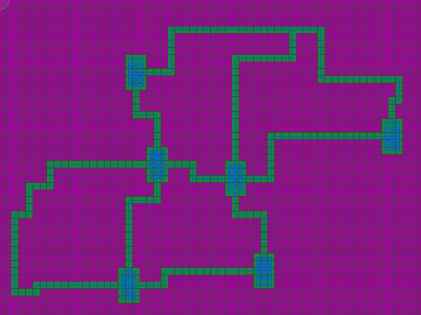
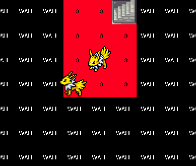
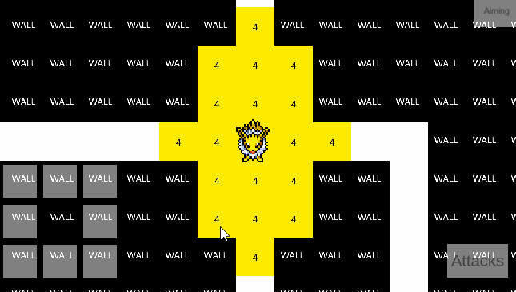
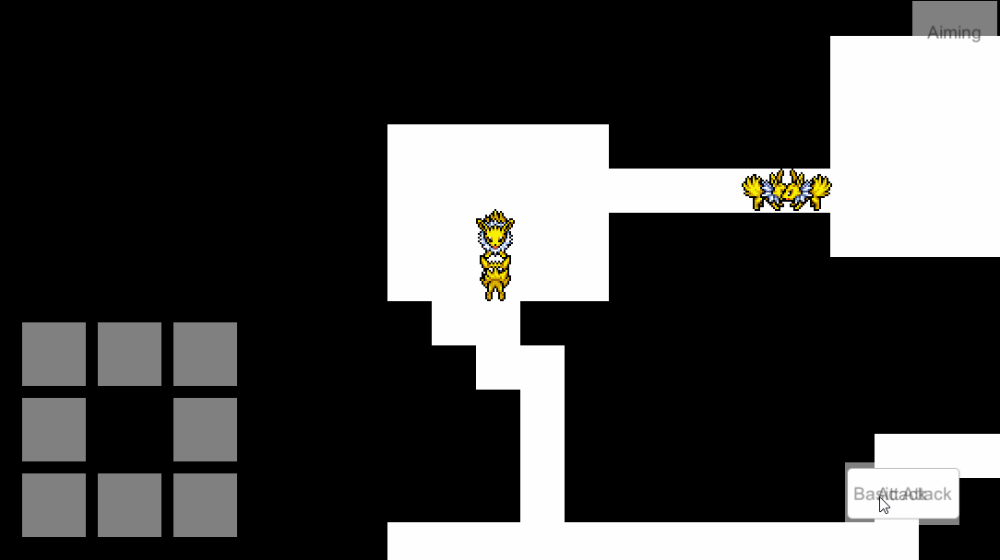
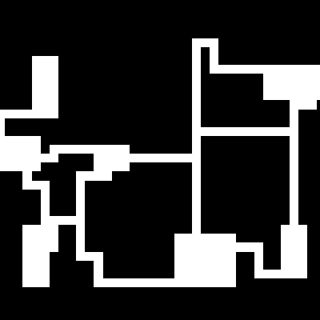

Untitled Dungeon Crawler
Untitled Dungeon
Crawler
This game is a personal project that is heavily inspired by the Mystery Dungeon Games. It is a 2d-top down dungeon crawler, with procedurally generating dungeons.
Details
Tools: Unity
Currently In Development
This game is a personal project that is heavily inspired by the Mystery Dungeon Games. It is a 2d-top down dungeon crawler, with procedurally generating dungeons.
Details
Tools: Unity, FMOD
Contributions
- Game Designer
- Programmer
- Tools Designer
- AI Programmer
This game originally started out as a way to learn procedural generation systems, while designing based on one of my favourite games, Pokemon Mystery Dungeon: Explorers of Sky
Overall, the project is something that I continue development on when I have free time, and will apply any new techniques I find along the way.
Iteration Updates
Iteration
Updates
Mar 08, 2021 - Optimization: No more rigid bodies or colliders!
I had a week off from class, which was spent mostly working on this project. I was able to get a lot more done than I thought I would, which is a great motivator.
A lot of this sprint was reworking the exisiting systems to work with a new generation method, as the previous method was too unoptimized (it used a bunch of physics checks which slowed down the game).
The new method generates the entire dungeon as a 2d integer array, where the integers represent what type of tile is occupied in that position, and after it genererates, it passes the 2d array over to the navigation grid, to build using the array, rather than using many physics checks.
After this, it was msotly reworking everything, but there were some new things implemented:
I had a week off from class, which was spent mostly working on this project. I was able to get a lot more done than I thought I would, which is a great motivator.
A lot of this sprint was reworking the exisiting systems to work with a new generation method, as the previous method was too unoptimized (it used a bunch of physics checks which slowed down the game).
The new method generates the entire dungeon as a 2d integer array, where the integers represent what type of tile is occupied in that position, and after it genererates, it passes the 2d array over to the navigation grid, to build using the array, rather than using many physics checks.
After this, it was msotly reworking everything, but there were some new things implemented:
- Updated generation algorithm for better dungeon layouts
- Optimized multiple systems to remove Unity physics entirely from the project
- Updated Ai to attack the player
- Added ranged attacks, which can be shot as projectiles
- Updated AI to use range attacks if possible
- Added updated UI for quick access to attacks



Jan 18, 2021 - Buiding off upon what was already developed from previous iterations, I updated much of the game in this commit.
- AI Behaviour Systems & Detection
- Modular Animation Pipeline
- Player Movement & Combat
- Turn Based Manager
- Android Controls

Sept 2, 2019 - The initial commit. Mostly prototyping some systems and mechanics. Analyzed the generation systems in mystery dungeon and tried to build based on them.
- AI a* pathfinding
- Player Movement
- Basic Dungeon Generation
- Initial Turn Based Manager

Mar 08, 2021 - Optimization: No more rigid bodies!
I had a week off from class, which was spent mostly working on this project. I was able to get a lot more done than I thought I would, which is a great motivator.
A lot of this sprint was reworking the exisiting systems to work with a new generation method, as the previous method was too unoptimized (it used a bunch of physics checks which slowed down the game).
The new method generates the entire dungeon as a 2d integer array, where the integers represent what type of tile is occupied in that position, and after it genererates, it passes the 2d array over to the navigation grid, to build using the array, rather than using many physics checks.
After this, it was msotly reworking everything, but there were some new things implemented:
I had a week off from class, which was spent mostly working on this project. I was able to get a lot more done than I thought I would, which is a great motivator.
A lot of this sprint was reworking the exisiting systems to work with a new generation method, as the previous method was too unoptimized (it used a bunch of physics checks which slowed down the game).
The new method generates the entire dungeon as a 2d integer array, where the integers represent what type of tile is occupied in that position, and after it genererates, it passes the 2d array over to the navigation grid, to build using the array, rather than using many physics checks.
After this, it was msotly reworking everything, but there were some new things implemented:
- Optimized multiple systems to remove Unity physics entirely from the project
- Updated Ai to attack the player
- Added ranged attacks, which can be shot as projectiles
- Updated AI to use range attacks if possible
- Added updated UI for quick access to attacks
Jan 18, 2021 - Buiding off upon what was already developed from previous iterations, I updated much of the game in this commit.
- AI Behaviour Systems & Detection
- Modular Animation Pipeline
- Player Movement & Combat
- Turn Based Manager
- Android Controls
Sept 2, 2019 - The initial commit. Mostly prototyping some systems and mechanics. Analyzed the generation systems in mystery dungeon and tried to build based on them.
- AI a* pathfinding
- Player Movement
- Basic Dungeon Generation
- Initial Turn Based Manager